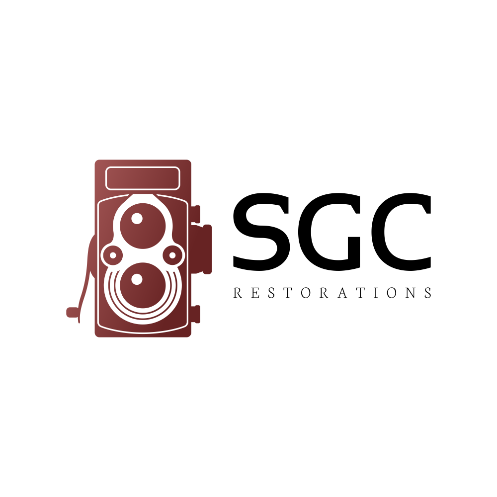

Hi, I'm Sid
SGC Restorations, A 40-plus year Legacy.
Specializing in the restoration of collectible Cars, Musical Instruments, Microscopes, Cameras and a lot of other valuables.
SGC Restorations, A 40-plus year Legacy.
Specializing in the restoration of collectible Cars, Musical Instruments, Microscopes, Cameras and a lot of other valuables.
Most of these collectibles were considered un-salvageable before I was able to restore them.
The case was badly worn and the lens and internals were unusable.
Was a complete salvage job. Extensive fiberglass and body work were required. All elements of vehicle completed with original components.
Bridge and pickups were crushed and the wood veneer was extensively damaged with water.
These days, nothing beats the workhorse microscopes that are basically antiques.
This one had been dropped in a lake by its former owner. Now it captures beautiful images.

Again, she suffered a head on collision but you wouldn't notice after my restoration work.
My experience in a variety of restoration projects is extensive.